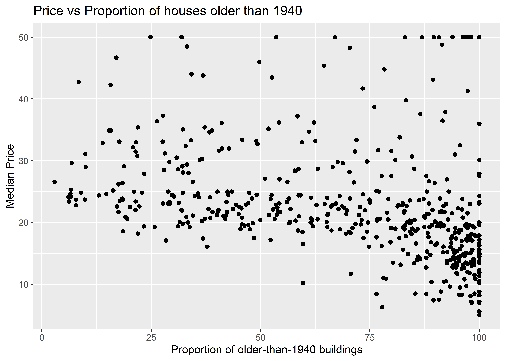

Modelling Linear Regression
Introduction
Following the ANOVA tutorial at Our Coding Club.
Suppose we have three sales strategies on our website, to sell a certain product, say men’s shirts. We have website interaction over several months. How do we know which strategy makes people buy the fastest ?
If there is a University course that is offered in parallel in three different classrooms, is there a difference between the average marks obtained by students in each of the classrooms?
In each case we have a set of observations in each category: Interaction Time vs Sales Strategy in the first example, and Student Marks vs Classroom in the second. We can take mean scores in each category and decide to compare them. How do we make the comparisons? One way would be to compare them pair-wise. But with this rapidly becomes intractable and also dangerous: with increasing number of groups, the number of mean-comparisons becomes very large \(N\choose 2\) and with each comparison the possibility of some difference showing up, just by chance, increases! And we end up making the wrong inference and perhaps the wrong decision.
The trick is of course to make comparisons all at once and ANOVA is the technique that allows us to do just that. In this tutorial, we will compare the Hatching Time of frog spawn1, at three different lab temperatures.
1 https://www.openintro.org/go/?id=anova-supplement&referrer=/book/ahss/index.php
In this tutorial, our research question is:
How does frogspawn hatching time vary with temperature?
Read the Data
Download the data by clicking the button below:
Rows: 60 Columns: 4
── Column specification ────────────────────────────────────────────────────────
Delimiter: ","
dbl (4): Frogspawn sample id, Temperature13, Temperature18, Temperature25
ℹ Use `spec()` to retrieve the full column specification for this data.
ℹ Specify the column types or set `show_col_types = FALSE` to quiet this message.Our response variable is the hatching Time. Our explanatory variable is a factor, Temperature, with 3 levels: 13°C, 18°C and 25°C. Different samples of spawn were subject to each of these temperatures respectively. The data is badly organized, with a separate column for each Temperature, with NA entries since not all samples of spawn could be subject to all temperatures. Hence, we should pivot_longer() this data, so all Time readings are in one column, and also convert the Temperature into a factor:
frogs_long <- frogs_orig %>%
pivot_longer(., cols = starts_with("Temperature"),
cols_vary = "fastest", # new in pivot_longer
names_to = "Temp",
values_to = "Time") %>%
drop_na() %>%
# knock off the unnecessary "Temperature" word everywhere
separate_wider_regex(cols = Temp,
patterns = c("Temperature",
TempFac = "\\d+"),
cols_remove = TRUE) %>%
# Convert Temp into TempFac, a 3-level factor
mutate(TempFac = factor(x = TempFac,
levels = c(13,18,25),
labels = c("13", "18", "25"))) %>%
rename("Id" = `Frogspawn sample id`)
frogs_longSo we have 20 samples for Hatching Time per TempFac setting.
EDA
Let us set a plot theme:
# Data visualisation
theme_frogs <- function(){ # Creating a function
theme_classic() + # Using pre-defined theme as base
theme(axis.text.x = element_text(size = 12, face = "bold"), # Customizing axes text
axis.text.y = element_text(size = 12, face = "bold"),
axis.title = element_text(size = 14, face = "bold"), # Customizing axis title
panel.grid = element_blank(), # Taking off the default grid
plot.margin = unit(c(0.5, 0.5, 0.5, 0.5), units = , "cm"),
legend.text = element_text(size = 12, face = "italic"), # Customizing legend text
legend.title = element_text(size = 12, face = "bold"), # Customizing legend title
legend.position = "right", # Customizing legend position
plot.caption = element_text(size = 12)) # Customizing plot caption
} Let us plot some histograms of Hatching Time:
gf_histogram(data = frogs_long,
~ Time,
fill = ~ TempFac,
stat = "count") %>%
gf_vline(xintercept = ~ mean(Time)) %>%
gf_labs(x = "Hatching Time") %>%
gf_theme(theme = theme_frogs()) %>%
gf_theme(guides(fill = guide_legend(title = "Temperature level (°C)")))
We should also look at boxplots

ANOVA
We will first execute the ANOVA test with code and evaluate the results. Then we will do an intuitive walk through of the process and finally, hand-calculate entire analysis for clear understanding.
R offers a very simple command to execute an ANOVA test: Note the familiar formula of stating the variables:
Df Sum Sq Mean Sq F value Pr(>F)
TempFac 2 1020.9 510.5 385.9 <2e-16 ***
Residuals 57 75.4 1.3
---
Signif. codes: 0 '***' 0.001 '**' 0.01 '*' 0.05 '.' 0.1 ' ' 1The effect of Temperature on Hatching time is significant, with a p-value of \(<2e-16\). The F-statistic for the ANOVA test is given by \(385.9\), which is very high. Clearly Temperature has a very significant effect on the hatching Time.
To find which specific value of TempFac has the most effect will require pairwise comparison of the group means, using a standard t-test. The confidence level for such repeated comparisons will need what is called Bonferroni correction2 to prevent us from detecting a significant (pair-wise) difference simply by chance. To do this we take \(\alpha\) the confidence level used and divide it by \(K\), the number of pair-wise comparisons we intend to make. So using an \(\alpha = 0.05\) for ANOVA, the pairwise comparisons in our current data will have to use \(\alpha/3 = 0.0166\) as the confidence level. We will discuss this more in the section titled “ANOVA Intuitive”.
2 https://www.openintro.org/go/?id=anova-supplement&referrer=/book/ahss/index.php
All that is very well, but what is happening under the hood of the aov() command?
Consider a data set with a single Quant and a single Qual variable. The Qual variable has two levels, the Quant data has 20 observations per Qual level.
library(patchwork)
ggplot2::theme_set(theme_classic())
data = tibble(index = 1:40,
qual = c(rep(x = "A", 20),rep(x = "B", 20)),
quant = c(rnorm(n = 20, mean = 0, sd = 2),
rnorm(n = 20, mean = 10, sd = 2)))
dataoverall_mean <- data %>%
summarise(overall_mean = mean(quant))
#overall_mean
grouped_means <- data %>%
group_by(qual) %>%
summarise(grouped_means = mean(quant))
#grouped_means
p1 <- gf_point(quant ~ index,
color = ~ qual,
data = data) %>%
gf_hline(yintercept = ~ overall_mean,
data = overall_mean) %>%
gf_segment(data = data,
color = "black",
overall_mean$overall_mean + quant ~ index + index)
p2 <- gf_point(quant ~ index,
group = ~ qual,
colour = ~ qual,
data = data) %>%
gf_hline(yintercept = ~ mean,
colour = ~ qual,
data = data %>%
group_by(qual) %>%
summarise(mean = mean(quant))) %>%
gf_segment(data = data %>% filter(qual == "A"),
grouped_means$grouped_means[1] + quant ~ index + index
) %>%
gf_segment(data = data %>% filter(qual == "B"),
grouped_means$grouped_means[2] + quant ~ index + index
)
p1 + p2 + patchwork::plot_annotation(tag_levels = c("A", "B"))
In Fig A, the horizontal black line is the overall mean of quant, denoted as \(\mu_{tot}\). The vertical black lines to the points show the departures of each point from this overall mean. The sum of squares of these vertical black lines in Fig A is called the Total Sum of Squares (SST).
\[ SST = \Sigma (y - \mu_{tot})^2 \tag{1}\]
If there are \(k\) levels in qual and \(n\) observations \(y_ n\) for each level, we can also write:
\[ SST = \sum_{i=1}^{kn}y_i^2 - \frac{ \left( \sum_{i=1}^{kn} y_i \right)^2}{kn} \]
In Fig B, the horizontal green and red lines are the means of the individual groups, respectively \(\mu_A\) and \(\mu_B\). The green and red vertical lines are the departures, or errors, of each point from its own group-mean. The sum of the squares of the green and red lines is called the Total Error Sum of Squares (SSE).
\[ SSE = \Sigma [(y - \mu_i)^2 +... (y - \mu_k)^2] \tag{2}\]
If the \(\mu_A\) and \(\mu_B\) are different from \(\mu_{tot}\), then what would be the relationship between \(SSA\) and \(SSE\) ? Clearly if the all means are identical then the \(SST\) and \(SSE\) are equal, since the two coloured lines would be in the same place as the black line. It should be clear that if \(\mu_A\) and \(\mu_B\) are different from the overall mean, then \(SSE < SST\).
So, when we desire to detect if the two groups are different in their means, we take the difference:
\[ SSA = SST - SSE \tag{3}\]
\(SSA\) is called the Treatment Sum of Squares and is a measure the differences in means of observations at different levels of the factor.
\(SSA\) can also directly be re-written in a very symmetric fashion as:
$$ SSA = -
$$ {#eg-SSA}
Note that in the first term, we are calculating sums of observations within each group in the inner summation, which is like a per-group mean(without the division). The outer summation takes the sum of squares of these undivided summations and divides by \(n\).
Comparing \(SSA\) and \(SSE\) now provides us with a method that helps us decide whether these means are different. The logic is that we compare global differences and local differences. The comparison is of course in the form of a ratio, the F-statistic. Since each of these measures uses a different sets of observations, the comparison is done after scaling each of \(SSA\) and \(SSE\) by the number of observations influencing them. This means that we need to divide each of \(SSA\) and \(SSE\) by their degrees of freedom, which gives us a ratio of variances:
\[ F_{stat} = \frac{SSA / df_{SSA}}{SSE / df_{SSE}} \]
where \(df_{SSA}\) and \(df_{SSE}\) are respectively the degrees of freedom in \(SSA\) and \(SSE\). And so we are in effect deciding if means are significantly different by analyzing (a ratio of) variances! Hence AN-alysis O-f VA-riance, ANOVA.
In order to find which of the means is significantly different from others, we need to make a pair-wise comparison of the means, applying the Bonferroni correction as stated before.
Let us hand-calculate the numbers so we know what the test is doing.
Here is the SST:
# Calculate overall sum squares SST
frogs_overall <- frogs_long %>%
summarise(mean_time = mean(Time),
# Overall mean across all readings
# The Black Line
SST = sum((Time - mean_time)^2),
n = n())
frogs_overall[1] 1096.333And here is our plot to understand the SST:
frogs_plot <- frogs_long %>%
arrange(TempFac) %>%
rowid_to_column(var = "index")
frogs_mean <- frogs_long %>%
summarise(overall_mean = mean(Time))
frogs_grouped_means <- frogs_long %>%
group_by(TempFac) %>%
summarise(grouped_means = mean(Time))
gf_point(Time ~ index,
color = ~ TempFac,
data = frogs_plot) %>%
gf_hline(yintercept = ~ overall_mean,
data = frogs_mean) %>%
gf_segment(data = frogs_plot,
color = "black",
frogs_mean$overall_mean + Time ~ index + index)
And here is the SSE:
# Calculate sums of square errors *within* each group
# with respect to individual group means
frogs_within_groups <- frogs_long %>%
group_by(TempFac) %>%
summarise(mean_time = mean(Time),
variance_time = var(Time),
group_error_squares = sum((Time - mean_time)^2),
n = n())
frogs_within_groupsfrogs_SSE <- frogs_within_groups %>%
summarise(SSE = sum(group_error_squares))
SSE <- frogs_SSE$SSE
SSE[1] 75.4frogs_plot <- frogs_long %>%
arrange(TempFac) %>%
rowid_to_column(var = "index")
frogs_mean <- frogs_long %>%
summarise(overall_mean = mean(Time))
frogs_grouped_means <- frogs_long %>%
group_by(TempFac) %>%
summarise(grouped_means = mean(Time))
gf_point(Time ~ index,
group = ~ TempFac,
colour = ~ TempFac,
data = frogs_plot) %>%
gf_hline(yintercept = ~ grouped_means,
colour = ~ TempFac,
data = frogs_grouped_means) %>%
gf_segment(data = frogs_plot %>% filter(TempFac == 13 ),
frogs_grouped_means$grouped_means[1] + Time ~ index + index
) %>%
gf_segment(data = frogs_plot %>% filter(TempFac == 18),
frogs_grouped_means$grouped_means[2] + Time ~ index + index
) %>%
gf_segment(data = frogs_plot %>% filter(TempFac == 25),
frogs_grouped_means$grouped_means[3] + Time ~ index + index
) 
OK, we have \(SST\) and \(SSE\), so let’s get \(SSA\):
We have \(SST = 1096\), \(SSE = 75.4\) and therefore \(SSA = 1020.9\).
In order to calculate the F-Statistic, we need to compute the variances, using these sum of squares. We obtain variances by dividing by their Degrees of Freedom:
\[ F_{stat} = \frac{SSA / df_{SSA}}{SSE / df_{SSE}} \]
where \(df_{SSA}\) and \(df_{SSE}\) are respectively the degrees of freedom in SSA and SSE.
Let us calculate these Degrees of Freedom. With \(k = 2\) levels in the factor TempFac, and \(n = 20\) points per level, \(SST\) clearly has degree of freedom \(kn-1\), since it uses all observations but loses one degree to calculate the global mean. (If each level did not have the same number of points \(n\), we simply take all observations less one as the degrees of freedom for \(SST\)).
\(SSE\) has \(k*(n-1)\) as degrees of freedom, since each of the \(k\) groups there are \(n\) observations and each group loses one degree to calculate its own group mean.
And therefore \(SSA\) has \(k-1\) degrees of freedom.
We can still calculate these in R, for the sake of method and clarity:
# Error Sum of Squares SSE
df_SSE <- frogs_long %>%
# Takes into account "unbalanced" situations
group_by(TempFac) %>%
summarise(per_group_df_SSE = n() - 1) %>%
summarise(df_SSE = sum(per_group_df_SSE)) %>% as.numeric()
## Overall Sum of Squares SST
df_SST <- frogs_long %>%
summarise(df_SST = n() - 1) %>% as.integer()
# Treatment Sum of Squares SSA
k <- length(unique(frogs_long$TempFac))
df_SSA <- k - 1The degrees of freedom for the quantities are:
Now we are ready to compute the F-statistic:
# Finally F_Stat!
## Combine the sum-square_error for each level of the factor
# weighted by degrees of freedom per level
# Which are of course equal here ;-D
MSE <- frogs_within_groups %>%
summarise(mean_square_error = sum(group_error_squares/df_SSE)) %>%
as.numeric()
MSE[1] 1.322807[1] 510.4667[1] 385.8966The F-stat is compared with a critical value of the F-statistic, which is computed using the formula for the f-distribution in R. As with our hypothesis tests, we set the significance level to 0.95, and quote the two relevant degrees of freedom as parameters to qf() which computes the critical F value as a quartile:
F_crit <- qf(p = 0.95, # Significance level is 5%
df1 = df_SSA, # Numerator degrees of freedom
df2 = df_SSE) # Denominator degrees of freedom
F_crit[1] 3.158843[1] 385.8966The F_crit value can also be seen in a plot3:
3 Pruim R, Kaplan DT, Horton NJ (2017). “The mosaic Package: Helping Students to ‘Think with Data’ Using R.” The R Journal, 9(1), 77–102. https://journal.r-project.org/archive/2017/RJ-2017-024/index.html.

Any value of F more than the F_crit occurs with smaller probability than 0,05. Our F_stat is much higher than F_crit, by orders of magnitude! And so we can say with confidence that Temperature has a significant effect on spawn Time.
And that is how ANOVA computes!
Checking ANOVA Assumptions
ANOVA makes 3 fundamental assumptions:
Data are normally distributed.
Variances are homogeneous.
Observations are independent.
We can check these using checks and graphs:
Checks for Normality
The shapiro.wilk test tests if a vector of numeric data is normally distributed and rejects the hypothesis of normality when the p-value is less than or equal to 0.05.
Shapiro-Wilk normality test
data: frogs_long$Time
W = 0.92752, p-value = 0.001561The p-value is very low and we cannot reject the (alternative) hypothesis that the overall data is not normal. How about normality at each level of the factor?
frogs_grouped <- frogs_long %>%
group_by(TempFac) %>%
nest(.key = "list")
frogs_grouped %>%
pluck("list", 1) %>% # naming the nested column "list"
select(Time) %>%
as_vector() %>%
shapiro.test(.)
Shapiro-Wilk normality test
data: .
W = 0.88954, p-value = 0.02638# OK now we are set for group-wise Shapiro-Wilk testing:
frogs_grouped %>%
mutate(shaptest =
purrr::map(.x = list, # Column name is "list"
.f = \(.x) select(.data = .x,
Time) %>%
as_vector() %>%
shapiro.test(.)),
params = map(.x = shaptest,
.f = \(.x) broom::tidy(.x))) %>%
select(TempFac, params) %>%
unnest(cols = params)The shapiro.wilk test makes a NULL Hypothesis that the data are normally distributed and estimates the probability that this could have happened by chance. Except for TempFac = 18 the p-values are less than 0.05 and we can reject the NULL hypothesis that each of these is normally distributed. Perhaps this is a sign that we need more than 20 samples per factor level.
We can also check the residuals post-model:
frogs_anova$residuals %>%
as_tibble() %>%
gf_histogram(~ value,data = .) %>%
gf_theme(theme = theme_frogs())
frogs_anova$residuals %>%
as_tibble() %>%
gf_qq(~ value, data = .) %>%
gf_qqstep() %>%
gf_qqline() %>%
gf_theme(theme = theme_frogs())Warning: The following aesthetics were dropped during statistical transformation: sample
ℹ This can happen when ggplot fails to infer the correct grouping structure in
the data.
ℹ Did you forget to specify a `group` aesthetic or to convert a numerical
variable into a factor?
Shapiro-Wilk normality test
data: frogs_anova$residuals
W = 0.94814, p-value = 0.01275Unsurprisingly, the residuals are also not normally distributed either.
Check for Similar Variance
Response data with different variances at different levels of an explanatory variable are said to exhibit heteroscedasticity. This violates one of the assumptions of ANOVA.
To check if the Time readings are similar in variance across levels of TempFac, we can use the Levene Test, or since our per-group observations are not normally distributed, a non-parametric rank-based Fligner-Killeen test. The NULL hypothesis is that the data are with similar variances. The tests assess how probable this is with the given data assuming this NULL hypothesis:
Fligner-Killeen test of homogeneity of variances
data: Time by TempFac
Fligner-Killeen:med chi-squared = 0.53898, df = 2, p-value = 0.7638It seems that there is no cause for concern here; the data do not have significantly different variances.
Independent Observations
This is an experiment design concern; the way the data is gathered must be specified such that data for each level of the factors ( factor combinations if there are more than one) should be independent.
Effect Size
The simplest way to find the actual effect sizes detected by an ANOVA test is to use (paradoxically) the summary.lm() command:
It may take a bit of effort to understand this. First the TempFac is arranged in order of levels, and the mean at the \(`TempFac` = 13\) is titled intercept. That is \(26.3\). The other two means for levels \(18\) and \(25\) are stated as differences from this intercept, \(-5.3\) and \(-10.1\) respectively. The p.value for all these effect sizes is well below the desired confidence level of \(0.05\).
We can easily plot bar-chart with error bars for the effect size:
# Merging group averages with `std.error`
frogs_long %>%
group_by(TempFac) %>%
summarise(mean = mean(Time)) %>%
cbind(std.error = tidy_anova$std.error) %>%
mutate(hi = mean + std.error,
lo = mean - std.error) %>%
gf_col(data = ., mean ~ TempFac,
fill = "grey",
color = "black") %>%
gf_point(mean ~ TempFac,
color = "red",
size = 4) %>%
gf_errorbar(hi + lo ~ TempFac,
color = "blue",
linetype = "dashed")
ANOVA using Permutation Tests
We wish to establish the significance of the effect size due to each of the levels in TempFac. From the normality tests conducted earlier we see that except at one level of TempFac, the times are are not normally distributed. Hence we opt for a Permutation Test to check for significance of effect.
As remarked in Ernst4, the non-parametric permutation test can be both exact and also intuitively easier for students to grasp. Permutations are easily executed in R, using packages such as mosaic5.
4 Ernst, Michael D. 2004. “Permutation Methods: A Basis for Exact Inference.” Statistical Science 19 (4): 676–85. doi:10.1214/088342304000000396.
5 Pruim R, Kaplan DT, Horton NJ (2017). “The mosaic Package: Helping Students to ‘Think with Data’ Using R.” The R Journal, 9(1), 77–102. https://journal.r-project.org/archive/2017/RJ-2017-024/index.html.
We proceed with a Permutation Test for TempFac. We shuffle the levels (13, 18, 25) randomly between the Times and repeat the ANOVA test each time and calculate the F-statistic. The Null distribution is the distribution of the F-statistic over the many permutations and the p-value is given by the proportion of times the F-statistic equals or exceeds that observed.
We will use mosaic and also try with infer.
mosaic offers an easy and intuitive way of doing a repeated permutation test, using the do() command. We will shuffle the TempFac factor to jumble up the Time observations, 10000 times. Each time we shuffle, we compute the F_statistic and record it. We then plot the 10000 F-statistics and compare that with the real-world observation of F-stat.
obs_F_stat <- frogs_anova %>%
broom::tidy() %>%
select(statistic)
observed_mosaic <- obs_F_stat$statistic[1]
null_dist_mosaic <- do(10000) * aov(Time ~ shuffle(TempFac), data = frogs_long)
null_dist_mosaic %>% head()null_dist_mosaic %>% drop_na() %>%
select(F) %>%
gf_histogram(data = ., ~ F,
fill = ~ F >= observed_mosaic,
title = "Null Distribution of ANOVA F-statistic" )
The Null distribution of the F_statistic under permutation shows it never crosses the real-world observed value, testifying the strength of the effect of TempFac on hatching Time. And the p-value is:
We calculate the observed F-stat with infer, which also has a very direct, if verbose, syntax for doing permutation tests:
observed_infer <- frogs_long %>%
specify(Time ~ TempFac) %>%
hypothesise(null = "independence") %>%
calculate(stat = "F")
observed_inferWe see that the observed F-Statistic is of course \(385.8966\) as before. Now we use infer to generate a NULL distribution using permutation of the factor TempFac:
null_dist_infer <- frogs_long %>%
specify(Time ~ TempFac) %>%
hypothesise(null = "independence") %>%
generate(reps = 1000, type = "permute") %>%
calculate(stat = "F")
head(null_dist_infer)
As seen, the infer based permutation test also shows that the permutationally generated F-statistics are nowhere near that which was observed. The effect of TempFac is very strong.
Conclusions
We have discussed ANOVA as a means of modelling the effects of a Categorical variable on a Continuous (Quant) variable. ANOVA can be carried out using the standard formula aov when assumptions on distributions, variances, and independence are met. Permutation ANOVA tests can be carried out when these assumptions do not quite hold.
References
- The ANOVA tutorial at Our Coding Club.
- Michael Crawley, The R Book,second edition, 2013. Chapter 11.
- David C Howell, Permutation Tests for Factorial ANOVA Designs
- Marti Anderson, Permutation tests for univariate or multivariate analysis of variance and regression